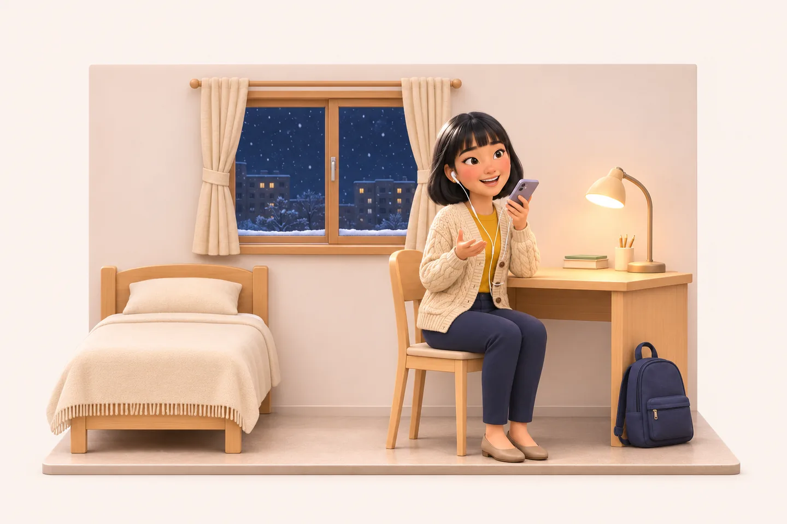
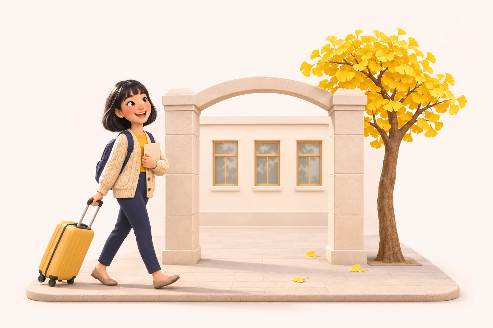
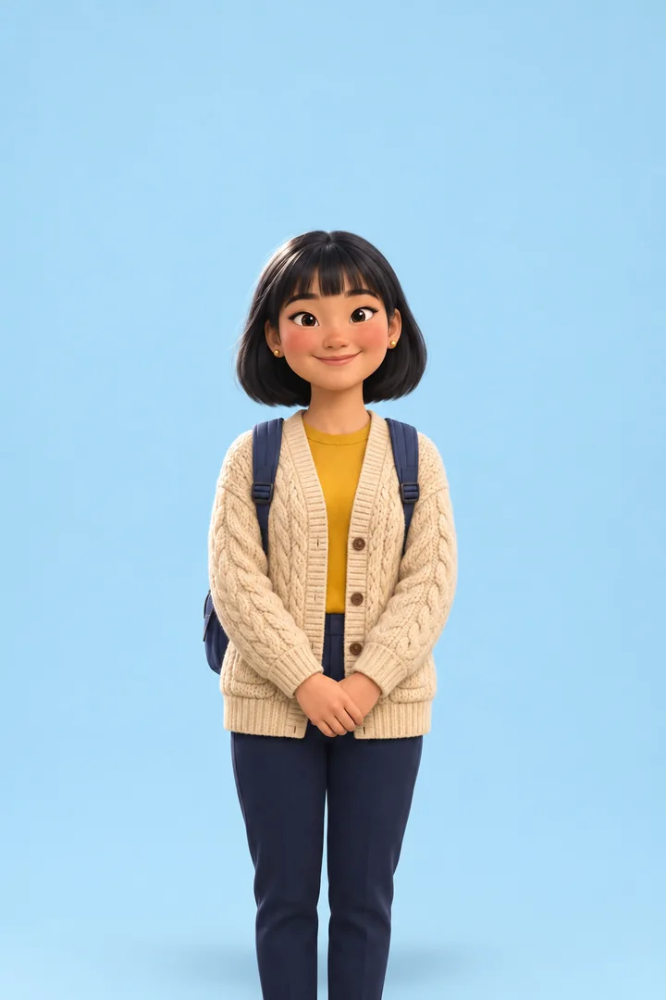
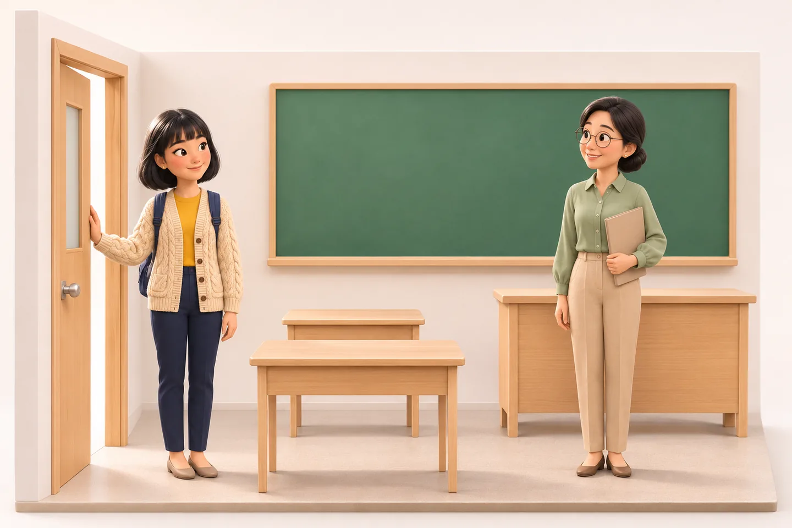
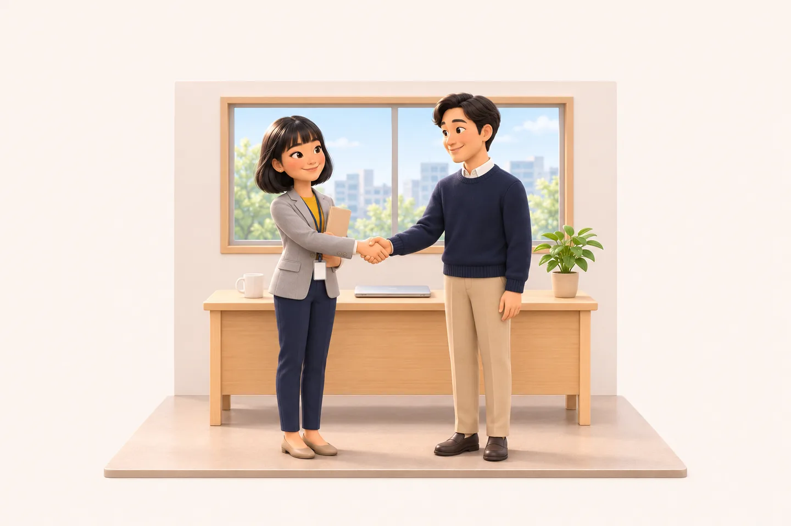
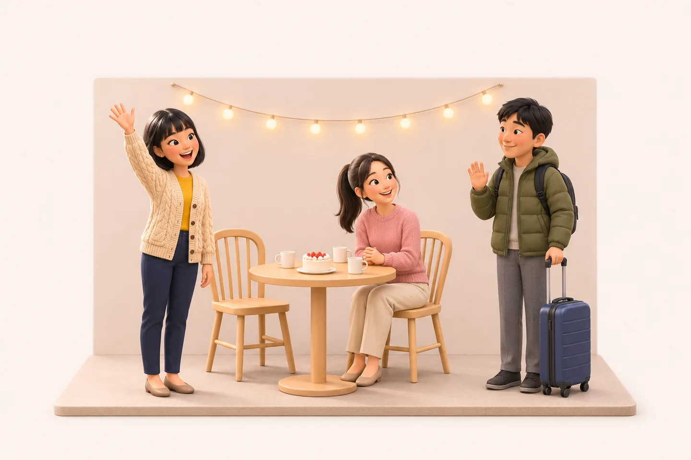
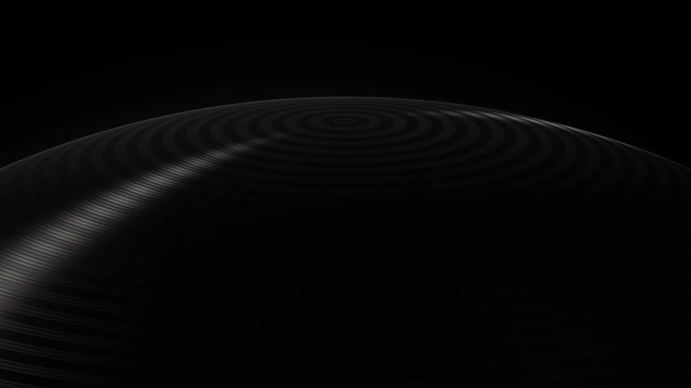
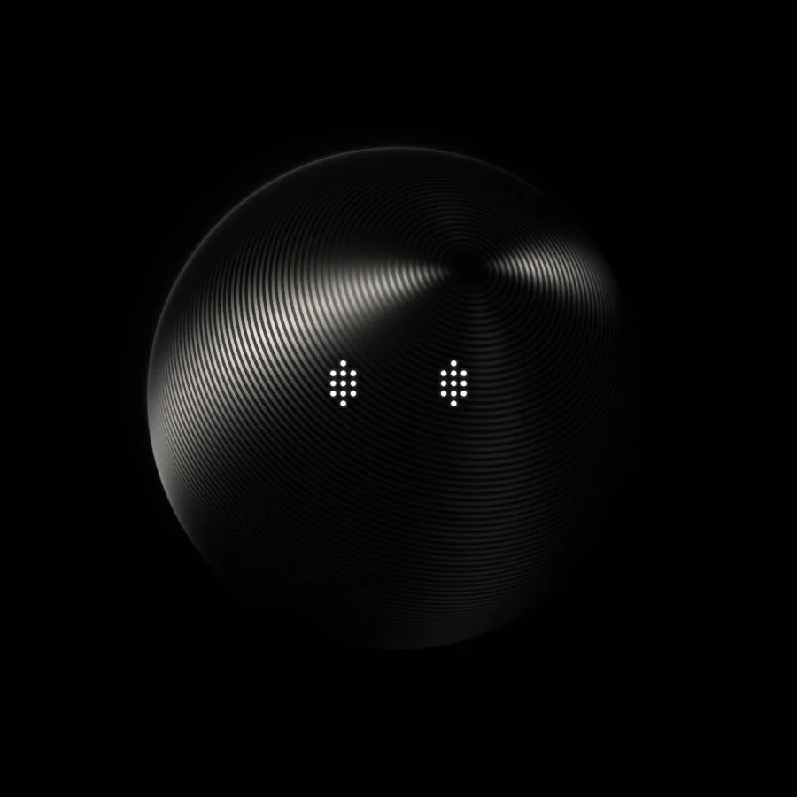

첫째 · 집에서
한국어
드라마 속 선배와 소리 내어 말해야 다음 장면이 열립니다. 틀린 말은 기억했다가 잊을 때쯤 다시 꺼냅니다.
지금 됩니다 · 웹에서 무료 SYNK WORLD 열기
SYNK가 하는 일은 셋입니다

한국어와 유학한국어 첫마디부터 한국에서의 첫 직장까지, 한 사람과 끝까지 갑니다. SYNK LAB · PATH AI 강의회사를 AI로 돌리는 사람들이 가르치고, 혼자 일하는 사람의 업무 앱 솔리오를 만듭니다.
SYNK SHIFT
AI 강의회사를 AI로 돌리는 사람들이 가르치고, 혼자 일하는 사람의 업무 앱 솔리오를 만듭니다.
SYNK SHIFT
 광고카메라 앞에서 10년을 일한 배우가 AI 모델을 연출해 광고를 만듭니다.
SYNK PULSE
광고카메라 앞에서 10년을 일한 배우가 AI 모델을 연출해 광고를 만듭니다.
SYNK PULSE
셋 모두, 한 사람에게 맞추는 AI에서 나왔습니다.
한국어와 유학 · SYNK LAB · PATH
한국어, 교실, 유학, 취업, 모임. 다섯 가지를 따로 파는 회사가 아닙니다. 한 사람이 이 길을 처음부터 끝까지 SYNK와 걷습니다.

이 한 사람을 따라가 봅니다 ↓드라마 속 선배와 소리 내어 말해야 다음 장면이 열립니다. 틀린 말은 기억했다가 잊을 때쯤 다시 꺼냅니다.
지금 됩니다 · 웹에서 무료 SYNK WORLD 열기
선생님이 교실에서 고쳐 준 말을 앱이 평일에 다시 꺼냅니다. 목표는 유학의 문턱인 TOPIK 4급입니다.
준비 중 · 울란바토르 교실
그동안 쌓인 한국어 기록 하나로 학생은 원하는 회사를, 회사는 필요한 사람을 만납니다.
준비 중
같은 나라 선배가 첫 달을 함께하고, 동네 모임에서 한국 친구를 만납니다. 혼자 두지 않습니다.
준비 중
AI 강의 · SYNK SHIFT
듣고 끝나는 강의가 아닙니다. 듣는 사람이 자기 일에서 결과물 하나를 만들어 갑니다. 주제에 맞는 AI 강사도 찾아 보내 드립니다.

SYNK SOLIO
여러 AI 구독의 남은 양과 결제일을 한 화면에서 봅니다. 강의에서 배운 것을 내 사업에서 계속 쓰게 합니다.

광고 · SYNK PULSE
기획부터 완성까지 직접 만든 광고와 공모전 당선작입니다. 표지를 누르면 재생됩니다.

회사 · 엔진
틀린 말을 기억했다가 잊을 때쯤 다시 꺼내고, 사람마다 다음에 할 일을 고릅니다. 한국어 앱에서 지금 돌고 있는 이 엔진의 이름이 아틀라스입니다.
아틀라스 보기